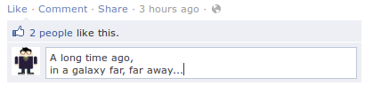

It's a small jQuery plugin for expandable <textarea>.
In other words, it's a multi-line textbox that grows automatically, increasing its height as user types more and more text into it.

Yeah, just like comment field on Facebook.
Why, sure! Here's a textbox that should demonstrate it well enough:
Include jquery.xarea.js after jQuery:
<script src="jquery.xarea.js"></script>
and call xarea() on any <textarea> elements
you want to make expandable:
<script>
$(document).ready(function() {
$('textarea').xarea();
});
<script>
xarea() will take the box' initial height and set it as min-height
so that it won't shrink to nothingness should it go empty.
Head over to GitHub to grab a copy. And by the way, it's free for all intent and purposes!